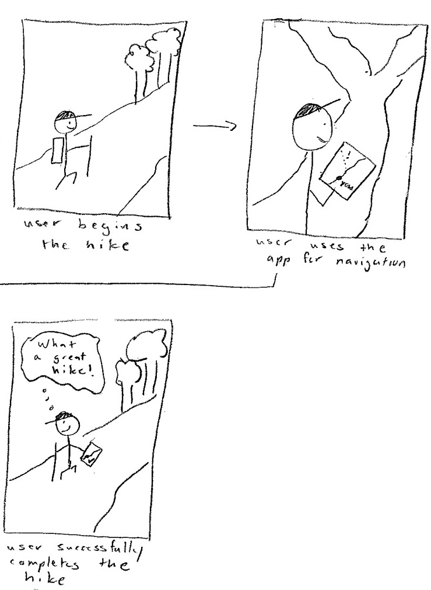

Rational for choosing a design focus
We chose the design of a mobile app because after doing more research through speaking to friends we found that most students preferred to carry around and use their mobile devices to complete the tasks. They feel as if it is hardware that everyone has, and if we were to choose another design such as a smartwatch or AR glasses then it would require them to buy additional hardware/equipment as opposed to just installing an application on their mobile device. We chose the tasks of getting lost in the wild and identifying nature because we believe that it is what is most needed and would be most used by our customers. When we define the problems that people have while hiking and exploring the wild, we realized that most of the issues uncovered by our CIs revolved around people needing a reliable way to navigate through their hike and outdoor enthusiasts desiring an easy way to learn about the wildlife around them. This design in particular is better suited to the people we are targeting because most people in today’s age have smartphones. This makes it easy to reach and engage our audiences to ensure that they receive the best experience possible. It is also very portable. It is a device that slips right in the pocket and can be taken around anywhere. It is also something that people bring when they are out on hikes or adventures in the wild. Since they already bring their phones out in nature, it would not be a hindrance for them to download our app, adding an additional tool to their hiking, camping or explorationary experience. These tasks are more compelling than others because it is the tasks that are most done by hikers and campers. Every hiker/camper has to navigate to some place. All too often they get lost while out in the wild due to insufficient navigational indicators. This task is therefore one of utmost importance that is done by all hikers/campers. Identification is also a task that is very important. Nature enthusiasts want a way to engage with and learn about the wildlife around them while out on their hikes. Instead of passively taking in their surroundings, they want to be able to identify the trees, flowers, berries, and animals in their environment. With these design, they are saved the trouble of identifying features of the things they see to precise detail. Instead of counting the number of petals, guessing the right colours or feeling the right texture, they simply need to point, scan and the result they want will appear right at their fingertips. This task is a vital one and has many aspects which is why we believe it is more compelling than others.
Navigation

Jordan loves to explore. It’s a good day outside so she wants to go out for a hike. Jordan selects her hike through the hikAR app and heads out. Throughout the hike, she uses the app to guide her and stay on the route. Because of hikAR, Jordan was able to have a fun and easy experience hiking outdoors, not having to worry about getting lost or under-preparing.
Identification

Markus is out in the wild by himself because he is curious about the forest nearby his waterfront house in Michigan. He walks by a tree on one of his daily hikes to find out more information about the forest around him. He takes out his phone and logs into the hikAR app. By taking a picture of the tree, he is easily able to identify the type of tree it is and a couple fun facts about the tree. He is able to continue on his walk now with newfound knowledge on the area.